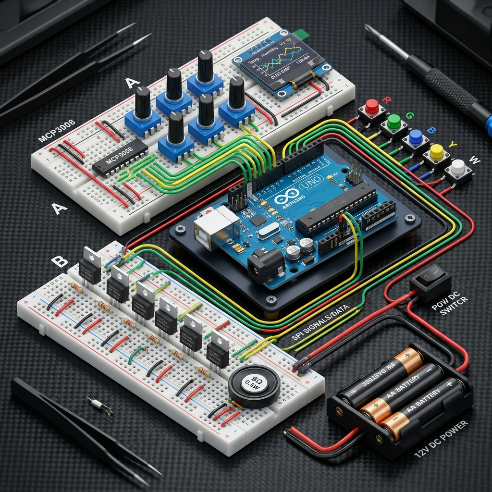

Guide de Câblage Visuel Officiel – Prototype Simplifié (1 Arduino Uno)

Le montage est réparti sur deux plaques d'essai (breadboards) afin de bien isoler la partie commande (basse puissance) de la partie alimentation des bandes LED (haute puissance). Cette séparation est essentielle pour éviter les parasites sur les signaux analogiques et garantir un fonctionnement stable.
INPUT_PULLUP.| Broche Arduino | Type de Signal | Composant Connecté | Broche du Composant | Couleur de Fil Recommandée |
|---|---|---|---|---|
| GND | GND | Masse Commune (Tous) | Rail Bleu / Source MOSFETs | Noir / Marron |
| 5V | 5V VCC | OLED, MCP3008, Potentiomètres | VCC / VDD / VREF | Rouge |
| A4 | I2C SDA | Écran OLED | SDA | Bleu |
| A5 | I2C SCL | Écran OLED | SCL | Jaune |
| D2 | Signal son | MOSFET Haut-Parleur | Gate (via résistance 220Ω) | Orange |
| D3 | PWM LED 1 | MOSFET Zone 1 | Gate (via résistance 220Ω) | Vert |
| D5 | PWM LED 2 | MOSFET Zone 2 | Gate (via résistance 220Ω) | Vert |
| D6 | PWM LED 3 | MOSFET Zone 3 | Gate (via résistance 220Ω) | Vert |
| D9 | PWM LED 4 | MOSFET Zone 4 | Gate (via résistance 220Ω) | Vert |
| D10 | PWM LED 5 | MOSFET Zone 5 | Gate (via résistance 220Ω) | Vert |
| D11 | PWM LED 6 | MOSFET Zone 6 | Gate (via résistance 220Ω) | Vert |
| D4 | SPI CS | MCP3008 | Pin 10 (CS/SHDN) | Blanc |
| D7 | SPI CLK | MCP3008 | Pin 13 (CLK) | Blanc |
| D8 | SPI DIN | MCP3008 | Pin 11 (DIN) | Blanc |
| D12 | SPI DOUT | MCP3008 | Pin 12 (DOUT) | Blanc |
| D13 | Bouton 1 | Bouton Zone 1 | Borne A (Borne B à GND) | Gris |
| A0 | Bouton 2 | Bouton Zone 2 | Borne A (Borne B à GND) | Gris |
| A1 | Bouton 3 | Bouton Zone 3 | Borne A (Borne B à GND) | Gris |
| A2 | Bouton 4 | Bouton Zone 4 | Borne A (Borne B à GND) | Gris |
| A3 | Bouton 5 | Bouton Zone 5 | Borne A (Borne B à GND) | Gris |
Cette zone est dédiée au pilotage des 6 MOSFETs et du MOSFET audio. Pour chaque MOSFET, applique le câblage suivant :